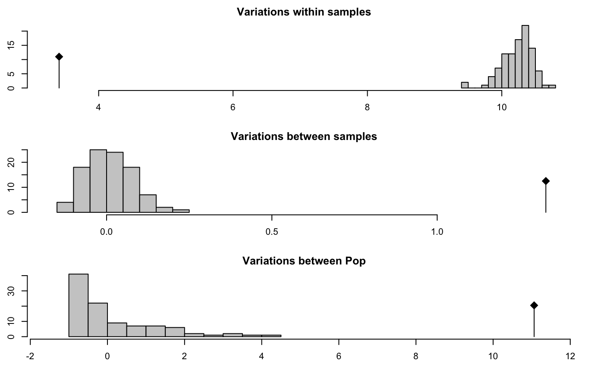

R/amova.r
poppr.amova.RdThis function simplifies the process necessary for performing AMOVA in R. It
gives user the choice of utilizing either the ade4 or the pegas
implementation of AMOVA. See ade4::amova() (ade4) and pegas::amova()
(pegas) for details on the specific implementation.
poppr.amova(x, hier = NULL, clonecorrect = FALSE, within = TRUE, dist = NULL, squared = TRUE, freq = TRUE, correction = "quasieuclid", sep = "_", filter = FALSE, threshold = 0, algorithm = "farthest_neighbor", threads = 1L, missing = "loci", cutoff = 0.05, quiet = FALSE, method = c("ade4", "pegas"), nperm = 0)
| x | |
|---|---|
| hier | a hierarchical formula that defines your population
hierarchy. (e.g.: |
| clonecorrect |
|
| within |
|
| dist | an optional distance matrix calculated on your data. If this is
set to |
| squared | if a distance matrix is supplied, this indicates whether or not it represents squared distances. |
| freq |
|
| correction | a |
| sep | Deprecated. As of poppr version 2, this argument serves no purpose. |
| filter |
|
| threshold | a number indicating the minimum distance two MLGs must be separated by to be considered different. Defaults to 0, which will reflect the original (naive) MLG definition. |
| algorithm | determines the type of clustering to be done.
|
| threads |
|
| missing | specify method of correcting for missing data utilizing
options given in the function |
| cutoff | specify the level at which missing data should be
removed/modified. See |
| quiet |
|
| method | Which method for calculating AMOVA should be used? Choices refer to package implementations: "ade4" (default) or "pegas". See details for differences. |
| nperm | the number of permutations passed to the pegas implementation of amova. |
a list of class amova from the ade4 or pegas package. See
ade4::amova() or pegas::amova() for details.
The poppr implementation of AMOVA is a very detailed wrapper for the
ade4 implementation. The output is an ade4::amova() class list that
contains the results in the first four elements. The inputs are contained
in the last three elements. The inputs required for the ade4 implementation
are:
a distance matrix on all unique genotypes (haplotypes)
a data frame defining the hierarchy of the distance matrix
a genotype (haplotype) frequency table.
All of this data can be constructed from a genind or genlight object, but can be daunting for a novice R user. This function automates the entire process. Since there are many variables regarding genetic data, some points need to be highlighted:
strata() for details on
how to properly define these strata.
within = TRUE, poppr will split genotypes into
haplotypes with the function make_haplotypes() and use those to calculate
within-individual variance. No estimation of phase is made. This acts much
like the default settings for AMOVA in the Arlequin software package.
Within individual variance will not be calculated for haploid individuals
or dominant markers as the haplotypes cannot be split further. Setting
within = FALSE uses the euclidean distance of the allele frequencies
within each individual. Note: within = TRUE is incompatible with
filter = TRUE. In this case, within will be set to FALSE
quasieuclid(), lingoes(), and cailliez(). The correction of these
distances should not adversely affect the outcome of the analysis.
mlg.filter(). This can necessarily only be done AMOVA tests that do not
account for within-individual variance. The distance matrix used to
calculate the amova is derived from using mlg.filter() with the option
stats = "distance", which reports the distance between multilocus
genotype clusters. One useful way to utilize this feature is to correct for
genotypes that have equivalent distance due to missing data. (See example
below.)
within = TRUE) in the pegas
implementation. If you want to perform permutation analyses on the pegas
implementation, you must set within = FALSE. In addition, while clone
correction is implemented for both methods, filtering is only implemented
for the ade4 version.
freq option. This
has been shown to be robust to estimates with mixed ploidy (Ronfort et al.
1998; Meirmans and Liu 2018). If you wish to brute-force your way to
estimating AMOVA using missing values, you can split your haplotypes with
the make_haplotypes() function.
One strategy for addressing ambiguous dosage in your polyploid data set
would be to convert your data to polysat's genambig class with the
as.genambig(), estimate allele frequencies with polysat::deSilvaFreq(),
and use these frequencies to randomly sample alleles to fill in the
ambiguous alleles.
Excoffier, L., Smouse, P.E. and Quattro, J.M. (1992) Analysis of molecular variance inferred from metric distances among DNA haplotypes: application to human mitochondrial DNA restriction data. Genetics, 131, 479-491.
Ronfort, J., Jenczewski, E., Bataillon, T., and Rousset, F. (1998). Analysis of population structure in autotetraploid species. Genetics, 150, 921–930.
Meirmans, P., Liu, S. (2018) Analysis of Molecular Variance (AMOVA) for Autopolyploids Submitted.
ade4::amova(), pegas::amova(), clonecorrect(), diss.dist(),
missingno(), ade4::is.euclid(), strata(), make_haplotypes(),
as.genambig()
#> #> This is a genclone object #> ------------------------- #> Genotype information: #> #> 119 original multilocus genotypes #> 187 diploid individuals #> 56 dominant loci #> #> Population information: #> #> 2 strata - Pop, Subpop #> 2 populations defined - Athena, Mt. Vernonamova.result <- poppr.amova(agc, ~Pop/Subpop)#> #>amova.result#> $call #> ade4::amova(samples = xtab, distances = xdist, structures = xstruct) #> #> $results #> Df Sum Sq Mean Sq #> Between Pop 1 1051.2345 1051.234516 #> Between samples Within Pop 16 273.4575 17.091091 #> Within samples 169 576.5059 3.411277 #> Total 186 1901.1979 10.221494 #> #> $componentsofcovariance #> Sigma % #> Variations Between Pop 11.063446 70.006786 #> Variations Between samples Within Pop 1.328667 8.407483 #> Variations Within samples 3.411277 21.585732 #> Total variations 15.803391 100.000000 #> #> $statphi #> Phi #> Phi-samples-total 0.7841427 #> Phi-samples-Pop 0.2803128 #> Phi-Pop-total 0.7000679 #>amova.test <- randtest(amova.result) # Test for significance plot(amova.test)amova.test#> class: krandtest lightkrandtest #> Monte-Carlo tests #> Call: randtest.amova(xtest = amova.result) #> #> Number of tests: 3 #> #> Adjustment method for multiple comparisons: none #> Permutation number: 99 #> Test Obs Std.Obs Alter Pvalue #> 1 Variations within samples 3.411277 -27.73819 less 0.01 #> 2 Variations between samples 1.328667 22.73597 greater 0.01 #> 3 Variations between Pop 11.063446 11.88906 greater 0.01 #># NOT RUN { # You can get the same results with the pegas implementation amova.pegas <- poppr.amova(agc, ~Pop/Subpop, method = "pegas") amova.pegas amova.pegas$varcomp/sum(amova.pegas$varcomp) # Clone correction is possible amova.cc.result <- poppr.amova(agc, ~Pop/Subpop, clonecorrect = TRUE) amova.cc.result amova.cc.test <- randtest(amova.cc.result) plot(amova.cc.test) amova.cc.test # Example with filtering data(monpop) splitStrata(monpop) <- ~Tree/Year/Symptom poppr.amova(monpop, ~Symptom/Year) # gets a warning of zero distances poppr.amova(monpop, ~Symptom/Year, filter = TRUE, threshold = 0.1) # no warning # }